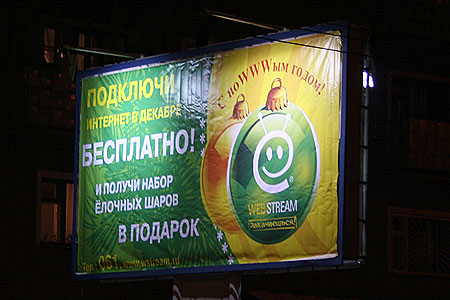

Существенное отставание в развитии кемеровского интернета от томского, барнаульского, не говоря уже о новосибирском лично я связываю в том числе и с введенной в Кемерово еще в далеком 1995 году повременной оплате за телефон.
Мало кто наверное помнит, но Кемерово тогда выступил в роли подопытного региона и до 98-го года повременная оплата существовала только у нас.
Чтобы избежать чересчур острого общественного резонанса телефоны-автоматы тогда сделали бесплатными (хотя их работоспособность в платном режиме все равно обеспечить никто не мог).
В начале 1998 года этот повременной опыт был распространен на Псковскую область. А в апереле того же года еще в 19 регионах России.
Практически во всех регионах повременка оказывалась невыгодной не только абонентам, но и операторам ввиду сокращения телефонных звонков. В Кемеровской области в частности трафик снизился на 30%.
Вскоре на рынок пришли операторы сотовой связи. ГТС еще попыталась снять хоть как-то заработать стремительно на исчезающем направлении, сделав телефоны-автоматы впоследстии станут опять платными, но последний вагон уходящего поезда уже скрылся за поворотом и ГТС осталась в нагрузку лишь социальная составляющая от целой отрасли (автоматы оставили в больницах, школах и т.п.)
Долгие 12 лет, пользователям интернета в Кемерово приходилось платить суммы бОльшие чем их друзьям из соседних регионов и даже Новокузнецка. Для многих видимо эта разница стала существенной. А ситуация с ростом количества кемеровских сайтов стала выправляться только с приходом E-light'а.
И хотя глобальные планы и отсутствие вменяемой конкуренции сделало возможным существование далеко не дешевых тарифов у первого серьезного кабельного провайдера в Кемерово, само его появление дало для кемеровского интернета очень много.
Возможность выбора между абонетской и повременной оплатой вернут в 2007 году.
ГТС вернется на землю и создаст Webstream, Webstream будет конкурировать с E-light, трафик начнет расти, цены начнут снижаться.
А провайдеры начнут предлагать не только бесплатное подключение (монтаж оплачивается отдельно :), но и всевозможные бонусы.
Например елочные шарики. Правда ведь круто повесить себе на елку шары с логотипом Webstream.
